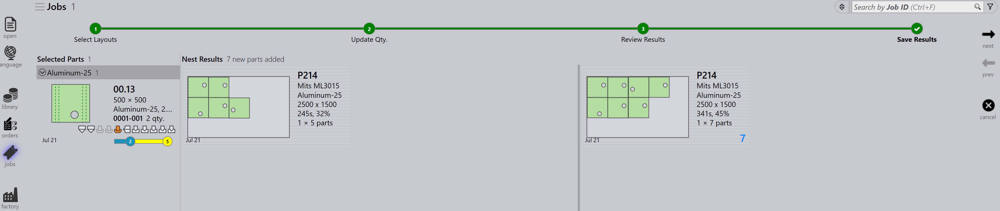
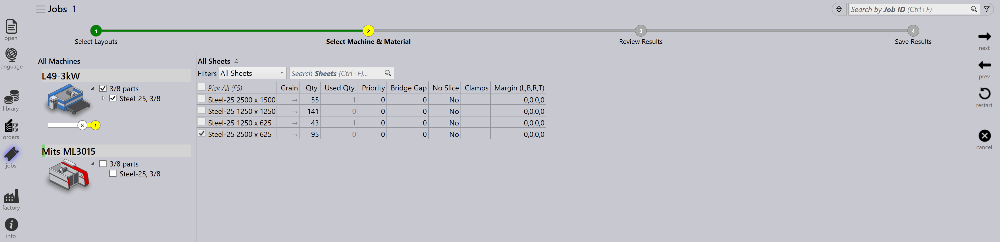

Panel tata letak
Bagian ini menjelaskan tindakan terkait tata letak seperti Kirim ke Mesin…, Tarik balik dari Mesin…, Ekspor Output, Tandai sebagai Selesai…, Tambahkan Komponen…, Adaptasi/Padatkan…, Rancangan Terpisah…, dan opsi lain yang digunakan untuk mengelola instans tata letak.

|
|


Kirim ke Mesin…
-
Ketika nest siap (terisi atau sangat diperlukan), Anda dapat mengirimnya ke mesin.
-
Klik kanan nest dan pilih Kirim ke Mesin….
-
Folder dibuat secara otomatis, dinamai sesuai nest.
-
File output (fxlyt, NC, report, csv) diekspor ke lokasi output JOB.
-
Nest yang dikirim ke mesin ditampilkan dengan tanda centang biru.

| Setelah dirilis, nest tersebut tidak lagi dicoba untuk pengepakan ulang. |
Tarik balik dari Mesin…
-
Jika output perlu validasi atau pembaruan (misalnya, menambahkan lebih banyak bagian):
-
Klik kanan tata letak yang diekspor.
-
Pilih Tarik balik dari Mesin….
-
-
File output dan folder (fxlyt, NC, report, csv) dihapus.
-
Nest menjadi dapat diedit lagi.
-
Anda dapat membuat perubahan dan mengirimnya ke mesin lagi.

Ekspor Output
-
Klik kanan tata letak (nest) mana pun yang telah dikirim ke mesin dan klik Ekspor Output.

-
Opsi Export Outputs mengekspor file NC, Report, dan Layout ke folder output mesin yang bersangkutan.
-
Opsi ini menghasilkan ulang file NC dengan pengaturan unit saat ini untuk tata letak.
| Export Outputs tidak tersedia untuk Tata Letak yang Completed dan Tata Letak yang menunggu dalam antrian untuk pengepakan ulang. |
Mark complete
-
Setelah nest diproses pada mesin, klik kanan nest dan pilih Tandai sebagai Selesai….
-
Anda dapat memilih beberapa nest dan menandainya sebagai selesai pada waktu yang sama.
-
Ketika nest ditandai sebagai selesai:
-
Itu dibuat abu-abu, dipindahkan ke akhir daftar, dan ditampilkan dengan tanda centang hijau.
-
Tata letak dihapus dari daftar tata letak aktif.
-
Status bagian dan pekerjaan diperbarui, dan jumlah yang diproses berpindah ke status selesai.
-
File output untuk tata letak tersebut dihapus dari lokasi output mesin untuk menghindari penggunaan duplikat.

-
Tambahkan Komponen…

-
Gunakan opsi ini untuk menambahkan lebih banyak bagian ke tata letak yang relatif dikemas dengan buruk. Seperti Nesting Interaktif, ini adalah opsi berbasis wizard dan dapat digunakan pada satu atau beberapa tata letak pada waktu yang sama.
-
TruSmartCAM memasang wizard repack Tata Letak di area kerja utama ketika opsi ini digunakan. Tahan tombol Ctrl dan pilih satu atau lebih bagian untuk dikemas pada tata letak dan tekan Berikutnya.

-
Bagian yang dipilih ditampilkan di langkah berikutnya dengan kolom jumlah yang dapat diedit. Perbarui jumlah bagian jika diperlukan di field Update Qty. Klik Berikutnya untuk melanjutkan ke nesting. Perhatikan bahwa jumlah hanya dapat ditingkatkan, tidak dikurangi.

-
Semua tata letak dinesting secara terpisah, dan hasil nested ditampilkan dengan bagian yang baru dikemas ditempatkan di atasnya. Memilih tata letak menampilkan semua bagian tata letak yang ada. Hasil secara otomatis dibuang jika tidak ada bagian baru yang ditempatkan selama pengepakan ulang. Tata letak dengan beberapa salinan dapat menghasilkan pola yang berbeda setelah pengepakan ulang.

Adaptasi/Padatkan…
-
Perintah berbasis wizard ini dapat digunakan untuk mengadaptasi tata letak dari satu mesin ke mesin lain ketika mesin asli sedang down atau ketika beban kerja mesin perlu diseimbangkan.

-
Ini dapat digunakan ketika lembaran yang direncanakan habis stoknya dan tata letak perlu direncanakan ulang pada lembaran lain yang tersedia.
-
Anda dapat menggabungkan tata letak yang dikemas pada lembaran yang lebih kecil ke lembaran yang lebih besar untuk menggunakan material lebih efisien.
-
Anda dapat membagi tata letak yang dikemas pada lembaran yang lebih besar menjadi lembaran yang lebih kecil jika stok lembaran besar tidak tersedia.
-
Anda dapat meningkatkan efisiensi pengepakan beberapa tata letak (bahkan dari mesin yang berbeda) dengan menggabungkannya bersama-sama.
-
Untuk menggunakannya, pilih satu atau lebih tata letak dan klik Adaptasi/Padatkan… untuk membuka wizard di area kerja.

-
Panel kiri menampilkan semua tata letak yang dipilih dan panel Parts menampilkan bagian tata letak.

-
Pilih mesin target dan material lembaran, lalu klik Berikutnya untuk melakukan renesting.
-
Hasil nest baru ditampilkan di panel hasil.

-
Klik Berikutnya untuk menyimpan tata letak yang diadaptasi atau dipadatkan.

Membagi tata letak
Opsi Rancangan Terpisah… memungkinkan Anda membagi tata letak yang ada menjadi beberapa tata letak dengan memodifikasi jumlah, tanpa perlu mengulang tooling atau nesting.
Fitur ini sangat berguna dalam skenario berikut:
-
Ketika Anda perlu memproduksi sebagian dari jumlah total segera sambil menjadwalkan jumlah yang tersisa untuk produksi nanti.
-
Ketika kebutuhan produksi perlu didistribusikan di beberapa shift atau hari untuk mengoptimalkan alur kerja dan pemanfaatan sumber daya.
-
Ketika mesin tertentu sementara tidak tersedia atau sedang sibuk, dan Anda perlu menyesuaikan tata letak untuk mengakomodasi kendala produksi saat ini.
Untuk membagi tata letak, lakukan langkah-langkah berikut:
-
Dalam tampilan Layouts, pilih tata letak yang diperlukan.

-
Klik Rancangan Terpisah….

-
Masukkan nilai yang diperlukan di Salinan Baru.

-
Klik OK.

Tata letak yang dipilih sekarang dibagi menjadi dua tata letak dengan jumlah yang disesuaikan.